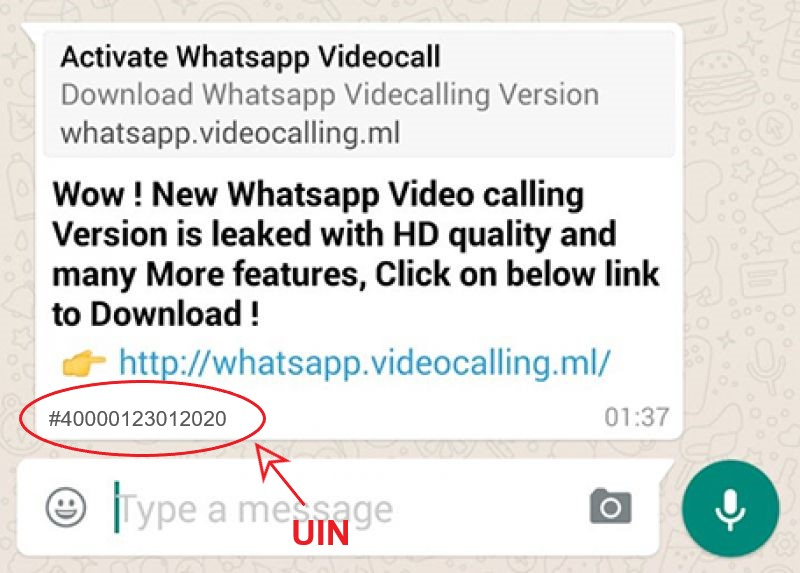

About Us
Step 1- Get the UIN with all news suchs as image,text and video, Enter it

Step 2- If NO UIN then news is fake
FAKE ALERT!!!! NO UIN
Add on- It also let You know about news in details
More News


 FAKE ALERT!!!! NO UIN
FAKE ALERT!!!! NO UIN
 More News
More News